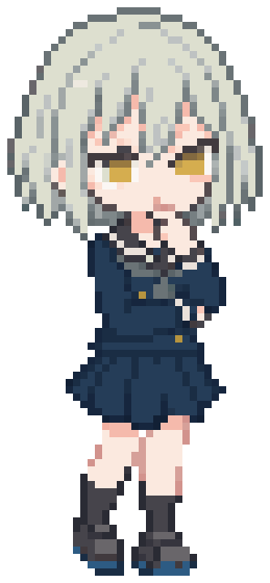

<!doctype html>
<html lang="ja">
<head>
<meta charset="utf-8">
<title>竜王戦 新UI 見本</title>
<style>
  :root {
    --night: #121c2e; --night2: #1b2a42; --panel: #2c4359; --deep: #172632; --cream: #fffcf4;
    --gold: #f1a54c; --gold2: #ffd27a; --red: #c4604c; --red2: #e0745e; --lav: #d8d0ff; --ai: #3d6fa5; --grass: #3f7d5a;
    --shadow: #0b1320;
  }
  * { box-sizing: border-box; }
  body { margin: 0; padding: 24px; background: #0a0f18; font-family: "IPAPGothic", "IPAGothic", sans-serif; color: var(--cream); }
  .row { display: flex; gap: 28px; align-items: flex-start; }
  .cap { width: 390px; margin: 0 0 10px; font-size: 15px; font-weight: 700; color: #9fb3c8; }
  .cap b { color: var(--gold); margin-right: 6px; }
  .phone { position: relative; width: 390px; height: 844px; overflow: hidden; border-radius: 26px; background: linear-gradient(#0f1828, #1c2c45 70%, #243755); box-shadow: 0 0 0 3px #2a3a52; }
  .px { image-rendering: pixelated; }
  .stars span { position: absolute; width: 4px; height: 4px; background: var(--cream); opacity: .8; }
  .stars span:nth-child(3n) { background: var(--gold); width: 3px; height: 3px; }
  .stars span:nth-child(4n) { background: var(--lav); }
  svg { display: block; }
  /* 共通の大きなボタン(押せる厚み) */
  .big { position: absolute; left: 20px; right: 20px; height: 64px; border: 0; border-radius: 16px; background: var(--gold); color: #1a2433; font: 900 26px "IPAPGothic", sans-serif; letter-spacing: .1em; box-shadow: 0 6px 0 #b0661b, 0 10px 18px rgba(0,0,0,.4); display: grid; place-items: center; }
  .big small { font-size: 13px; font-weight: 700; letter-spacing: 0; margin-top: -10px; }
  .seal { display: grid; place-items: center; border: 3px solid var(--cream); border-radius: 8px; background: var(--red); color: var(--cream); font-weight: 900; box-shadow: 3px 3px 0 var(--shadow); }
  .bubble { position: absolute; padding: 8px 12px; border-radius: 12px; background: var(--cream); color: #1a2433; font-size: 14px; font-weight: 700; line-height: 1.45; box-shadow: 3px 3px 0 var(--lav); }
  .chip { display: inline-block; padding: 2px 9px; border-radius: 999px; font-size: 12px; font-weight: 800; }
  .iconbtn { position: absolute; width: 48px; height: 48px; border-radius: 12px; background: var(--deep); border: 2px solid #4b6585; display: grid; place-items: center; font-size: 13px; font-weight: 800; color: var(--cream); box-shadow: 0 4px 0 var(--shadow); }
  .note { width: 390px; margin-top: 10px; font-size: 13px; line-height: 1.6; color: #b9c7d6; }
  .note li { margin-bottom: 4px; }
</style>
</head>
<body>
<div class="row" id="row"></div>
<script>
const SP = { yakobi: '../../public/characters/yakobihime-mini.webp', hanane: '../../public/characters/hanane-mini.webp' };
const stars = (n, seed) => { let s = seed, out = ''; const r = () => (s = (s * 9301 + 49297) % 233280) / 233280; for (let i = 0; i < n; i++) out += `<span style="left:${Math.floor(r()*380)}px;top:${Math.floor(r()*420)}px"></span>`; return `<div class="stars">${out}</div>`; };
// 階段状(ドット絵ふう)の山
function stepped(points, step = 8) {
  const out = [];
  for (let i = 0; i < points.length - 1; i++) {
    const [x1, y1] = points[i], [x2, y2] = points[i + 1];
    const n = Math.max(1, Math.round(Math.abs(x2 - x1) / step));
    for (let k = 0; k < n; k++) {
      const xa = x1 + (x2 - x1) * k / n, xb = x1 + (x2 - x1) * (k + 1) / n;
      const ya = Math.round((y1 + (y2 - y1) * k / n) / step) * step;
      out.push(`${xa},${ya}`, `${xb},${ya}`);
    }
  }
  out.push(`${points.at(-1)[0]},${points.at(-1)[1]}`);
  return out.join(' ');
}
// 点線の道(四角い点)
function dots(a, b, color, gap = 13) {
  const [x1, y1] = a, [x2, y2] = b; const d = Math.hypot(x2 - x1, y2 - y1); const n = Math.floor(d / gap);
  let s = '';
  for (let i = 1; i < n; i++) { const x = x1 + (x2 - x1) * i / n, y = y1 + (y2 - y1) * i / n; s += `<rect x="${Math.round(x - 3)}" y="${Math.round(y - 3)}" width="6" height="6" fill="${color}"/>`; }
  return s;
}
function mountain(h = 844, glow = false) {
  return `
  <polygon points="${stepped([[0,h],[0,520],[60,470],[120,500],[170,420],[230,380],[300,300],[340,330],[390,260],[390,h]])}" fill="#22385a"/>
  <polygon points="${stepped([[0,h],[0,600],[70,540],[150,470],[200,360],[250,250],[290,170],[330,230],[390,330],[390,h]])}" fill="#2b4568"/>
  <polygon points="${stepped([[60,h],[110,520],[160,430],[200,250],[230,160],[260,110],[300,180],[340,300],[390,420],[390,h]])}" fill="#355780"/>
  <polygon points="${stepped([[0,h],[0,700],[80,640],[160,610],[260,640],[330,600],[390,620],[390,h]])}" fill="#2a5047"/>
  ${glow ? '<circle cx="195" cy="80" r="70" fill="rgba(241,165,76,.18)"/>' : ''}`;
}
const R = (x, y, w, h, c) => `<rect x="${x}" y="${y}" width="${w}" height="${h}" fill="${c}"/>`;
// 頂上: 竜王の座(就位式の金屏風と、七番勝負の将棋盤)。実際の竜王戦の舞台で、空想の城は使わない。
function summit(x, y, s = 1, lit = false) {
  let g = '';
  const pw = 16, panels = 6, h = 44;
  for (let i = 0; i < panels; i++) g += R(-panels * pw / 2 + i * pw, -h + (i % 2) * 3, pw - 2, h - (i % 2) * 3, i % 2 ? '#e8b84a' : '#f6cf63') + R(-panels * pw / 2 + i * pw, -h + (i % 2) * 3, pw - 2, 4, '#fff1b0');
  g += R(-panels * pw / 2 - 3, 0, panels * pw + 4, 5, '#7a4a1a');
  // 将棋盤と座布団2枚
  g += R(-15, 4, 30, 18, '#d9a95a') + R(-15, 4, 30, 3, '#f0c879') + R(-15, 22, 30, 5, '#7a4a1a');
  for (let k = 1; k < 4; k++) g += R(-15 + k * 7.5, 7, 1, 14, '#7a4a1a') + R(-13, 4 + k * 4.5, 26, 1, '#7a4a1a');
  g += R(-46, 12, 22, 12, '#8a2f3a') + R(24, 12, 22, 12, '#8a2f3a');
  return `<g transform="translate(${x},${y}) scale(${s})" shape-rendering="crispEdges">${g}</g>`;
}
// 扇子(山場の段の印。棋士の持ち物)
function fan(x, y, color = '#e0745e') {
  return `<g transform="translate(${x},${y - 30})" shape-rendering="crispEdges">${R(-16, -2, 32, 4, color)}${R(-13, -6, 26, 4, color)}${R(-9, -10, 18, 4, '#ffd27a')}${R(-5, -13, 10, 3, '#ffd27a')}${R(-2, 2, 4, 8, '#3b1e1a')}</g>`;
}
// 将棋会館(ランキング戦の舞台)
function kaikan(x, y, w = 64, floors = 3) {
  const fh = 22, h = floors * fh; let g = R(x, y - h, w, h, '#8a98a8') + R(x, y - h, w, 3, '#a9b6c4');
  for (let f = 0; f < floors; f++) for (let c = 0; c < Math.floor((w - 8) / 16); c++) g += R(x + 6 + c * 16, y - h + 6 + f * fh, 10, 10, (f + c) % 3 === 0 ? '#3b4a5c' : '#ffd27a');
  g += R(x + w / 2 - 8, y - 16, 16, 16, '#ffd27a') + R(x + 2, y - h - 18, w - 4, 15, '#fffcf4');
  return `<g shape-rendering="crispEdges">${g}<text x="${x + w / 2}" y="${y - h - 6}" text-anchor="middle" font-size="11" font-weight="900" fill="#1a2433">将棋会館</text></g>`;
}
function flag(x, y, color = '#f1a54c') {
  return `<g transform="translate(${x},${y})" shape-rendering="crispEdges"><rect x="0" y="-30" width="3" height="30" fill="#fffcf4"/><rect x="3" y="-30" width="16" height="10" fill="${color}"/></g>`;
}
// 段(ノード)
function node(x, y, { state = 'todo', label = '', boss = false, size = 34 } = {}) {
  const fill = state === 'done' ? '#f1a54c' : state === 'current' ? '#fffcf4' : state === 'lost' ? '#5d6f80' : '#1b2a42';
  const stroke = boss ? '#e0745e' : state === 'todo' ? '#8fa3b6' : '#fffcf4';
  const s = boss ? size + 8 : size;
  return `<g shape-rendering="crispEdges">
    <rect x="${x - s/2}" y="${y - s/2 + 5}" width="${s}" height="${s * .55}" fill="#0b1320" opacity=".55"/>
    <rect x="${x - s/2}" y="${y - s/2}" width="${s}" height="${s * .62}" fill="${fill}" stroke="${stroke}" stroke-width="3"/>
    ${label ? `<text x="${x}" y="${y + s * .35 + 16}" text-anchor="middle" font-size="12" font-weight="800" fill="${state === 'todo' ? '#9fb3c8' : '#fffcf4'}" stroke="#0b1320" stroke-width="3" paint-order="stroke">${label}</text>` : ''}
  </g>`;
}
function face(x, y, ch, bg = '#c4604c', size = 36, fg = '#fffcf4') {
  return `<div class="seal" style="position:absolute;left:${x - size/2}px;top:${y - size/2}px;width:${size}px;height:${size}px;font-size:${size*.5}px;background:${bg};color:${fg}">${ch}</div>`;
}
function piece(x, y, size = 30, label = '自', gold = false) { // 自分の駒(将棋の駒の形)
  return `<div style="position:absolute;left:${x - size/2}px;top:${y - size*1.15}px;width:${size}px;height:${size*1.15}px;clip-path:polygon(50% 0,88% 16%,100% 100%,0 100%,12% 16%);background:${gold ? '#f1a54c' : '#fffcf4'};color:#1a2433;display:grid;place-items:center;padding-top:${size*.18}px;font-weight:900;font-size:${size*.5}px;filter:drop-shadow(0 3px 0 #0b1320)">${label}</div>`;
}
const sprite = (name, x, y, h) => ``;

// ---------- 1. 入口(タイトル)
const P = { // 道の段(地図の座標)
  r1: [86, 560], r2: [222, 528], r3: [300, 462], r4: [176, 418], r5: [92, 352], main: [214, 300], playoff: [304, 236], finals: [196, 178], ryuo: [196, 104],
};
const order = ['r1','r2','r3','r4','r5','main','playoff','finals','ryuo'];
function path(upto, color1 = '#f1a54c', color2 = 'rgba(255,252,244,.55)') {
  let s = '';
  for (let i = 0; i < order.length - 1; i++) s += dots(P[order[i]], P[order[i + 1]], i < upto ? color1 : color2);
  return s;
}
function map({ upto = 2, glowTop = false, labels = true } = {}) {
  const st = (i) => (i < upto ? 'done' : i === upto ? 'current' : 'todo');
  const names = ['1回戦','2回戦','準々決勝','準決勝','組の決勝','決勝T','挑戦者決定戦','七番勝負',''];
  let n = '';
  order.forEach((k, i) => { if (k !== 'ryuo' && k !== 'finals') n += node(...P[k], { state: st(i), label: labels ? names[i] : '', boss: k === 'r5' || k === 'playoff' }); });
  return `<svg width="390" height="844" style="position:absolute;inset:0">
    ${mountain(844, glowTop)}
    ${path(upto)}
    ${fan(...P.r5)}
    ${fan(...P.playoff)}
    ${summit(P.ryuo[0], P.ryuo[1] + 18, 1, glowTop)}
    ${n}
    ${labels ? `<text x="196" y="${P.ryuo[1] + 64}" text-anchor="middle" font-size="13" font-weight="900" fill="#ffd27a" stroke="#0b1320" stroke-width="3" paint-order="stroke">竜王</text>` : ''}
    ${labels ? `<text x="196" y="${P.finals[1] + 38}" text-anchor="middle" font-size="12" font-weight="800" fill="#ffd27a" stroke="#0b1320" stroke-width="3" paint-order="stroke">七番勝負</text>` : ''}
    ${kaikan(2, 610, 60, 3)}
  </svg>`;
}

const frames = [];
frames.push({ cap: '<b>1</b>入口: 竜王戦のタイトル', html: `
  ${stars(40, 3)}
  <svg width="390" height="844" style="position:absolute;inset:0">${mountain(844, true)}${path(0, '#f1a54c', 'rgba(255,252,244,.45)')}${summit(196, 350, 1.6, true)}</svg>
  <div style="position:absolute;left:0;right:0;top:44px;text-align:center">
    <div style="display:inline-flex;align-items:center;gap:12px">
      <div class="seal" style="width:56px;height:56px;font-size:30px">竜</div>
      <div style="font-size:64px;font-weight:900;letter-spacing:.12em;color:#fffcf4;text-shadow:0 4px 0 #c4604c,0 8px 0 #0b1320">竜王戦</div>
    </div>
    <div><span class="chip" style="background:#f1a54c;color:#1a2433;font-size:15px;padding:4px 16px;margin-top:6px">第3期</span></div>
  </div>
  ${face(196, 236, '天', '#d9b860', 44, '#1a2433')}
  <div style="position:absolute;left:0;right:0;top:262px;text-align:center;font-size:12px;font-weight:800;color:#ffd27a;text-shadow:0 2px 0 #0b1320">竜王・天鷺善彦が待つ</div>
  ${piece(86, 586, 34)} ${sprite('yakobi', 22, 520, 76)}
  <div class="bubble" style="left:118px;top:500px;width:248px">6組から、竜王への挑戦がはじまるよ。<br>一局ずつ登っていこう！</div>
  <div style="position:absolute;left:20px;right:20px;top:640px;padding:10px 14px;border-radius:12px;background:rgba(23,38,50,.92);border:2px solid #f1a54c;font-weight:800;font-size:15px;text-align:center">🎯 6組で <span style="color:#ffd27a;font-size:20px">2位以内</span> なら昇級</div>
  <div class="big" style="bottom:46px">▶ 出場する</div>
  <div class="iconbtn" style="right:16px;top:16px">設定</div>
  <div class="iconbtn" style="left:16px;top:16px">←</div>
`, note: ['開くと、カメラが頂上の竜王の座(金屏風と将棋盤。いまの竜王・善彦)から、将棋会館の前の自分まで下りてくる(1.2秒・押すと飛ばす。D:3-3「最初にクライマックスを」)。', '画面の言葉は「目標1行」と「出場する」だけ。設定は右上、説明はやこび姫を押すと聞ける。'] });

frames.push({ cap: '<b>2</b>期の画面: 竜王への山(地図)', html: `
  ${stars(28, 9)}
  ${map({ upto: 2 })}
  ${piece(P.r3[0], P.r3[1] - 4, 30)}
  ${face(P.r4[0] + 34, P.r4[1] - 18, '杉', '#c4604c', 34)}
  <div class="bubble" style="left:${P.r4[0] + 60}px;top:${P.r4[1] - 44}px;font-size:12px;padding:5px 8px">次の相手！</div>
  ${sprite('hanane', P.r5[0] - 46, P.r5[1] - 70, 56)}
  ${face(P.ryuo[0] + 68, P.ryuo[1] - 10, '天', '#d9b860', 32, '#1a2433')}
  ${sprite('yakobi', P.r3[0] - 58, P.r3[1] - 64, 52)}
  <div style="position:absolute;left:12px;right:12px;top:12px;display:flex;align-items:center;gap:8px">
    <div class="seal" style="width:40px;height:40px;font-size:20px">竜</div>
    <div style="flex:1"><div style="font-weight:900;font-size:17px">第3期 6組ランキング戦</div><div style="font-size:12px;color:#d8d0ff;font-weight:800">★ 推し 中村蓮さん: 準々決勝</div></div>
    <div class="iconbtn" style="position:static;width:44px;height:44px">表</div>
  </div>
  <!-- 次の一局のHUD -->
  <div style="position:absolute;left:0;right:0;bottom:0;height:226px;padding:14px 16px 0;background:linear-gradient(transparent,rgba(11,19,32,.96) 18%);">
    <div style="display:flex;align-items:center;gap:12px;margin-top:6px">
      <div class="seal" style="width:62px;height:62px;font-size:32px">杉</div>
      <div style="flex:1">
        <div style="font-size:12px;color:#ffd27a;font-weight:800">準々決勝の相手</div>
        <div style="font-size:24px;font-weight:900;line-height:1.1">杉山颯太 <span style="font-size:13px">三段</span></div>
        <div style="margin-top:4px"><span class="chip" style="background:#c4604c">攻め将棋</span> <span class="chip" style="background:#f1a54c;color:#1a2433">詰み S</span> <span class="chip" style="background:#55697d">受け C</span></div>
      </div>
    </div>
    <div style="display:flex;gap:8px;margin-top:10px;font-weight:900;font-size:15px">
      <div style="flex:1;padding:6px 10px;border-radius:10px;background:rgba(241,165,76,.18);border:2px solid #f1a54c">勝てば <span style="color:#ffd27a">準決勝へ</span></div>
      <div style="flex:1;padding:6px 10px;border-radius:10px;background:rgba(255,255,255,.06);border:2px solid #55697d;color:#c8d3de">負ければ ここまで</div>
    </div>
    <div class="big" style="position:absolute;bottom:22px;left:16px;right:16px">▶ 対局する</div>
  </div>
`, note: ['山そのものが道。麓の将棋会館から登り、山場の段には扇子の印、頂上は竜王の座(金屏風と将棋盤)。いまの段に自分の駒、次の段に次の相手、組の決勝に羽音、頂上にいまの竜王。いつか戦う相手が最初から見える(D:5-2)。', '下のHUDに、次の一局の顔・棋風の札・勝てば/負ければ・「対局する」。文は1行ずつ。くわしい情報は相手の顔を押すと開く。', 'トーナメント表は右上の「表」から重ねて開く。'] });

frames.push({ cap: '<b>3</b>VS画面: 対局の直前(1.2秒)', html: `
  <div style="position:absolute;inset:0;background:#3d6fa5;clip-path:polygon(0 0,62% 0,38% 100%,0 100%)"></div>
  <div style="position:absolute;inset:0;background:#c4604c;clip-path:polygon(62% 0,100% 0,100% 100%,38% 100%)"></div>
  <div style="position:absolute;inset:0;background:repeating-linear-gradient(115deg,rgba(255,255,255,.06) 0 6px,transparent 6px 22px)"></div>
  <div style="position:absolute;left:0;right:0;top:40px;text-align:center"><span class="chip" style="background:#172632;font-size:16px;padding:6px 18px;border:2px solid #f1a54c">6組ランキング戦 準々決勝</span></div>
  <div style="position:absolute;left:28px;top:130px;text-align:left">
    <div style="position:relative;height:110px">${piece(46, 108, 92)}</div>
    <div style="margin-top:14px;font-size:40px;font-weight:900;text-shadow:0 4px 0 #0b1320">あなた</div>
    <div style="font-weight:800">R1007・先手</div>
  </div>
  <div style="position:absolute;right:28px;top:470px;text-align:right">
    <div class="seal" style="width:104px;height:104px;font-size:56px;margin-left:auto;border-width:4px">杉</div>
    <div style="margin-top:12px;font-size:40px;font-weight:900;text-shadow:0 4px 0 #0b1320">杉山颯太</div>
    <div style="font-weight:800">三段・攻め将棋・後手</div>
  </div>
  <div style="position:absolute;left:0;right:0;top:340px;text-align:center;font-size:120px;font-weight:900;font-style:italic;color:#ffd27a;text-shadow:0 6px 0 #b0661b,0 12px 0 #0b1320;letter-spacing:-.04em">VS</div>
  <div style="position:absolute;left:0;right:0;bottom:56px;text-align:center;font-weight:900;font-size:18px"><span style="background:#172632;padding:8px 18px;border-radius:999px;border:2px solid #ffd27a">勝てば <span style="color:#ffd27a">準決勝へ</span></span></div>
`, note: ['「対局する」を押すと出る、対局の前の一瞬の見せ場(スマブラのVS画面)。両側が画面の外から滑り込み、VSが判子のように落ちる。', '1.2秒で盤へ。押すとすぐ盤へ(待たせない。D:3-3)。山場の一局(組の決勝・番勝負・ライバル)は少し長く、背景を金と朱にする。'] });

frames.push({ cap: '<b>4</b>対局のあと: 勝ち上がり', html: `
  ${stars(28, 9)}
  ${map({ upto: 3 })}
  <svg width="390" height="844" style="position:absolute;inset:0">
    <path d="M ${P.r3[0]} ${P.r3[1] - 30} Q ${(P.r3[0] + P.r4[0]) / 2} ${P.r4[1] - 110} ${P.r4[0]} ${P.r4[1] - 30}" stroke="#ffd27a" stroke-width="3" stroke-dasharray="4 8" fill="none"/>
  </svg>
  ${piece((P.r3[0] + P.r4[0]) / 2 + 20, P.r4[1] - 70, 32)}
  <div style="position:absolute;left:${P.r3[0] - 40}px;top:${P.r3[1] - 50}px;transform:rotate(-10deg)" class="seal"><div style="width:62px;height:40px;display:grid;place-items:center;font-size:20px">突破</div></div>
  ${face(P.r5[0] + 40, P.r5[1] - 28, '羽', '#c4604c', 34)}
  ${sprite('hanane', P.r5[0] - 46, P.r5[1] - 70, 56)}
  <div class="bubble" style="left:14px;top:214px;width:236px;font-size:12.5px">羽音さんが、前の回戦を<br>終盤の逆転で勝ち上がってきた！</div>
  <div style="position:absolute;left:0;right:0;bottom:0;height:200px;padding:16px;background:linear-gradient(transparent,rgba(11,19,32,.96) 20%)">
    <div style="display:flex;align-items:center;gap:12px;margin-top:20px">
      
      <div><div style="font-size:12px;color:#ffd27a;font-weight:800">準決勝の相手・ライバル</div><div style="font-size:24px;font-weight:900">天鷺羽音 <span style="font-size:13px">四段</span></div></div>
    </div>
    <div class="big" style="position:absolute;bottom:22px;left:16px;right:16px">▶ 対局する</div>
  </div>
`, note: ['勝つと、自分の駒が次の段へぴょんと跳ぶ(マリオの地図)。倒した段に「突破」の判子。次の相手が段に現れ、どう勝ち上がってきたかを1行。', '負けたときは駒はそのまま、段が灰色になるだけ(静かに。D:7-1)。'] });

frames.push({ cap: '<b>5</b>期の結果: 山の全景', html: `
  ${stars(40, 21)}
  <svg width="390" height="844" style="position:absolute;inset:0">
    ${mountain(844, false)}
    ${[['6組',620],['5組',548],['4組',476],['3組',404],['2組',332],['1組',260]].map(([g, y], i) => `<rect x="18" y="${y - 14}" width="54" height="26" fill="${i === 1 ? '#f1a54c' : '#172632'}" stroke="#fffcf4" stroke-width="2"/><text x="45" y="${y + 4}" text-anchor="middle" font-size="14" font-weight="900" fill="${i === 1 ? '#1a2433' : '#fffcf4'}">${g}</text>`).join('')}
    ${summit(196, 196, 1.3)}
    <path d="M 100 620 L 150 560 L 210 510 L 250 470" stroke="#f1a54c" stroke-width="6" fill="none" stroke-dasharray="2 10" stroke-linecap="square"/>
    ${flag(252, 470)}
  </svg>
  <div style="position:absolute;left:226px;top:420px;font-size:12px;font-weight:900;color:#ffd27a;text-shadow:0 2px 0 #0b1320">今期の最高<br>決勝T 1回戦</div>
  <div style="position:absolute;left:0;right:0;top:40px;text-align:center">
    <div style="font-size:15px;font-weight:800;color:#ffd27a">第3期竜王戦</div>
    <div style="font-size:40px;font-weight:900;text-shadow:0 4px 0 #0b1320">6組優勝！</div>
  </div>
  <div style="position:absolute;left:84px;top:520px;transform:rotate(-8deg)" class="seal"><div style="width:96px;height:46px;display:grid;place-items:center;font-size:20px">5組へ昇級</div></div>
  <div style="position:absolute;left:16px;right:16px;bottom:116px;display:flex;gap:8px">
    ${[['5勝1敗','戦績'],['終盤','いちばん光った'],['3連勝','最長']].map(([v, l]) => `<div style="flex:1;padding:8px;border-radius:12px;background:rgba(23,38,50,.92);border:2px solid #4b6585;text-align:center"><div style="font-size:19px;font-weight:900;color:#ffd27a">${v}</div><div style="font-size:11px;font-weight:700;color:#b9c7d6">${l}</div></div>`).join('')}
  </div>
  <div class="big" style="bottom:30px">▶ 次の期へ <small></small></div>
`, note: ['期が終わると、山を引きで見せる。今期どこまで登ったかに旗。組が上がるなら、山の横の番付に「5組へ昇級」の判子。', '数字は3枚の札だけ(戦績・いちばん光った項目・最長連勝)。レーダーチャートと統計は「くわしく」の奥へ。'] });

const row = document.getElementById('row');
for (const f of frames) {
  const col = document.createElement('div');
  col.innerHTML = `<p class="cap">${f.cap}</p><div class="phone">${f.html}</div><ul class="note">${f.note.map((t) => `<li>${t}</li>`).join('')}</ul>`;
  row.appendChild(col);
}
</script>
</body>
</html>
